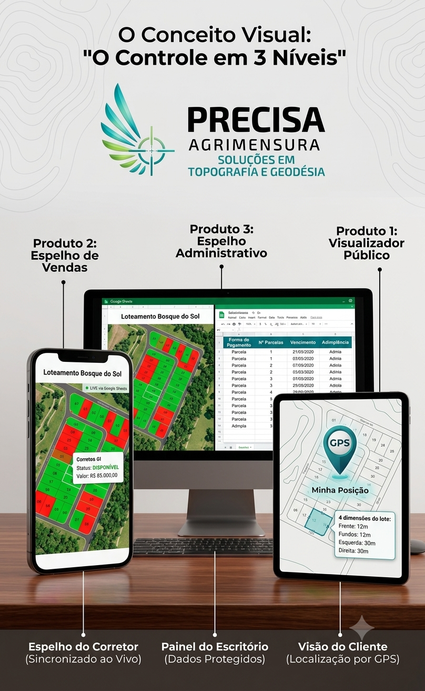

Dê aos seus corretores um mapa interativo no celular. Sincronizado com o seu escritório em tempo real, com atualização de status ao vivo e GPS integrado[span_0](start_span)[span_0](end_span).
Quero Ver o Sistema FuncionandoElimine a fricção entre o campo e o administrativo com nosso ecossistema integrado.

O corretor navega pelo loteamento usando o GPS do próprio smartphone. O sistema identifica a posição exata e exibe os lotes e quadras com as dimensões detalhadas[span_1](start_span)[span_1](end_span).
Integrado ao seu escritório. Se o administrativo marcar um lote como "Vendido", o mapa do corretor atualiza a cor automaticamente via Google Sheets[span_2](start_span)[span_2](end_span).
O público e os corretores acessam apenas informações de status e valor de balcão[span_3](start_span)[span_3](end_span). Dados financeiros sensíveis ficam blindados exclusivamente no painel interno do escritório[span_4](start_span)[span_4](end_span).
Sem instalação de aplicativos complexos. Nossa equipe mapeia a topologia do seu empreendimento e entrega o sistema rodando direto no navegador dos seus corretores.
Falar com um ConsultorAtendimento direto com a engenharia da Precisa Agrimensura.